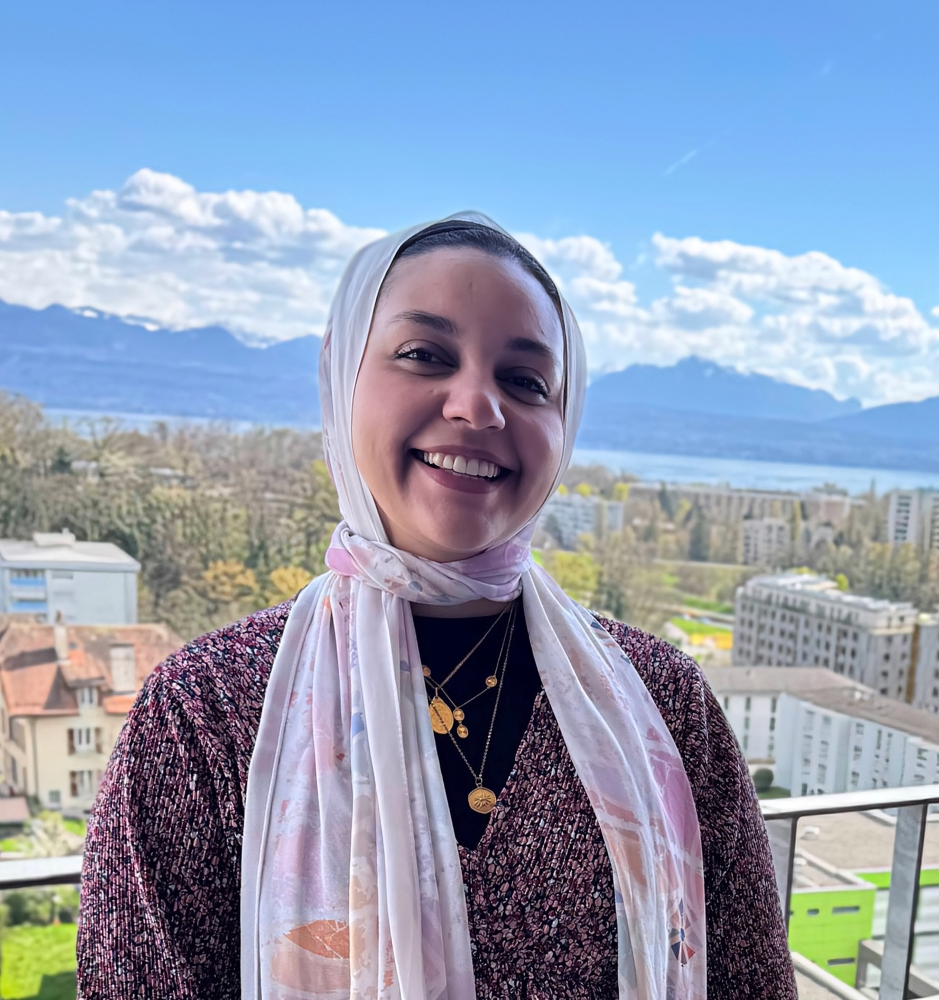

PhD Candidate · IC School, EPFL · BC116, Station 14, CH-1015 Lausanne
I am a PhD candidate in Computer Science at the IC School, EPFL, where I am a member of the SENS Lab supervised by Prof. Haitham Hassanieh. My expected graduation is Fall 2027.
I am broadly interested in practical perception systems that sense and reconstruct real-world environments, with a focus on wireless sensing, mmWave radar, and learning-based 3D imaging. I have also worked on hardware security, investigating electrical-level fault injection in FPGA-CPU systems.
My research focuses on enabling high-resolution wireless 3D sensing and imaging. I lead an end-to-end project on multi-radar fusion for autonomous mmWave imaging, building learning-based 3D reconstruction pipelines that combine mmWave radar and vision. I am also driving a project on joint communication and sensing (JCAS) using RFSoC-based 6G prototypes.
I hold a Bachelor of Science in Computer Engineering with a Minor in Mathematics, Highest Honors (GPA 3.957/4.0), from The American University in Cairo (AUC), June 2022. My undergraduate thesis proposed a multi-knowledge distillation framework with online learning, supervised by Prof. Cherif Salama and Dr. Hesham Eraqi.
In summer 2021, I was a research intern at the PARSA Lab, EPFL, where I investigated hardware security issues in FPGA-CPU MPSoCs modeling multi-tenant FPGA systems.
I am a recipient of the 2022 École Doctorale d'Informatique et de Communication Fellowship from EPFL's IC School, awarded for exceptional academic record, and the 2017 Khalaf Al Habtoor Scholarship covering full expenses for my bachelor's degree.
| Hussein, S., et al. 3D Shape Reconstruction from Autonomous Driving Radars. British Machine Vision Conference (BMVC), 2025. |
| Guan, J., Madani, S., Ahmed, W., Hussein, S., Gupta, S., & Hassanieh, H. Exploiting Virtual Array Diversity for Accurate Radar Detection. IEEE International Conference on Acoustics, Speech and Signal Processing (ICASSP), 2023. |
| Mahmoud, D. G., Dervishi, D., Hussein, S., Lenders, V., & Stojilović, M. DFAulted: CPU Software Faults from FPGA Undervolting. IEEE Access, 2022. |
| Mahmoud, D. G., Hussein, S., Lenders, V., & Stojilović, M. FPGA-to-CPU Undervolting Attacks. Design, Automation and Test in Europe Conference (DATE), 2022. |
Outside of research, I enjoy crocheting, aerial yoga, hiking, traveling to new places, and hosting dinner parties. I also love reading — mostly science fiction — and consuming obscure amounts of fruity tea. Most of all I enjoy my trips to Egypt & the Red Sea.